library(tidyverse)
library(gapminder)
gapminder <- gapminder |>
mutate(life_exp_cats = case_when(lifeExp >= 70 ~ "Long Life Expectancy",
lifeExp < 70 & lifeExp >= 50 ~ "Medium Life Expectancy",
lifeExp < 50 ~ "Short Life Expectancy"),
income_cat = case_when(gdpPercap >= 30000 ~ "High Income",
gdpPercap < 3000 & lifeExp >= 10000 ~ "Medium Inncome",
gdpPercap < 1000 ~ "Low Income"))
gapminder_2007 <- gapminder |> filter(year == 2007)
gapminder_1967 <- gapminder |> filter(year == 1967)
gapminder_1967_2007 <- gapminder |> filter(year == 1967 | year == 2007)
gap_continents <- gapminder |> filter(year == 2007) |> count(continent)First Lab: new geoms and review, ggplot2 practice
Here is some data preparation…
Given your assigned ‘geoms’ from the cheat sheet or grammar guide we haven’t already used, and create a plot and be prepared to describe it. What are the ‘required aesthetics’. Use one optional aesthetic as well.
assignments
- geom_line
- geom_histogram
- geom_rug
- geom_density_2d
- geom_dotplot
Again Take one of the assigned ‘geoms’ from the cheat sheet or grammar guide we haven’t already used, and create a plot and be prepared to describe it:
- geom_boxplot
- geom_violin
- geom_jitter
- geom_count
- geom_bin2d
review
Aesthetic mapping - linking information to aesthetics
In the graph below, the aesthetic “x” (the x position) encodes the information about continent.
Modify the plot below so that the aesthetic “fill” (short for fill color) encodes information about the variable “continent”.
ggplot(gap_continents) +
aes(x = continent,
y = n) +
geom_col()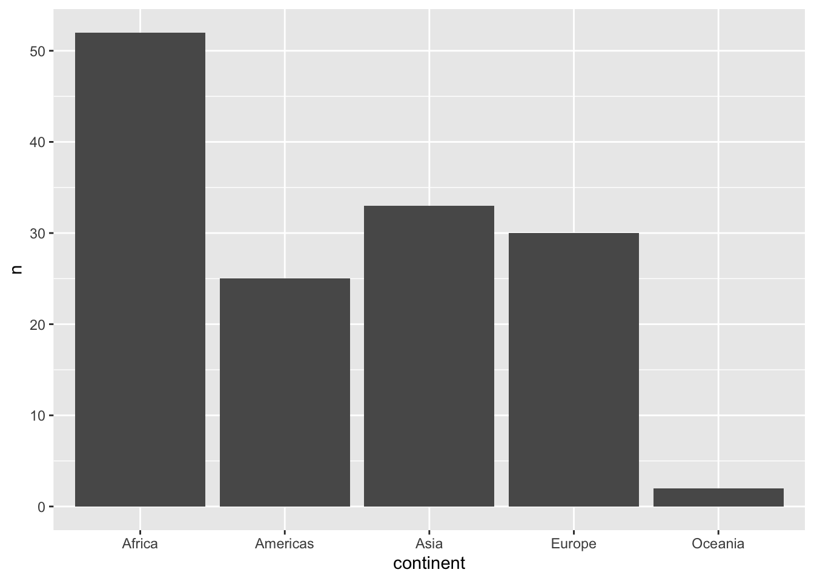
The result is a plot with double encoding. Continent is represented by x position and by color. Do you have an opinion about this double encoding? Does it work in this context? Write a sentence or two about your thoughts:
My answer …
Aesthetics choices that don’t encode information
Colors don’t need to encode anything information about the dataset, as shown below. They can be defined in the geom function that they will affect - not in an aesthetic mapping argument.
Select another color for the bars. Check out more color names here: http://www.stat.columbia.edu/~tzheng/files/Rcolor.pdf
# color
ggplot(gap_continents) +
aes(x = continent,
y = n) +
geom_col(fill = "steelblue")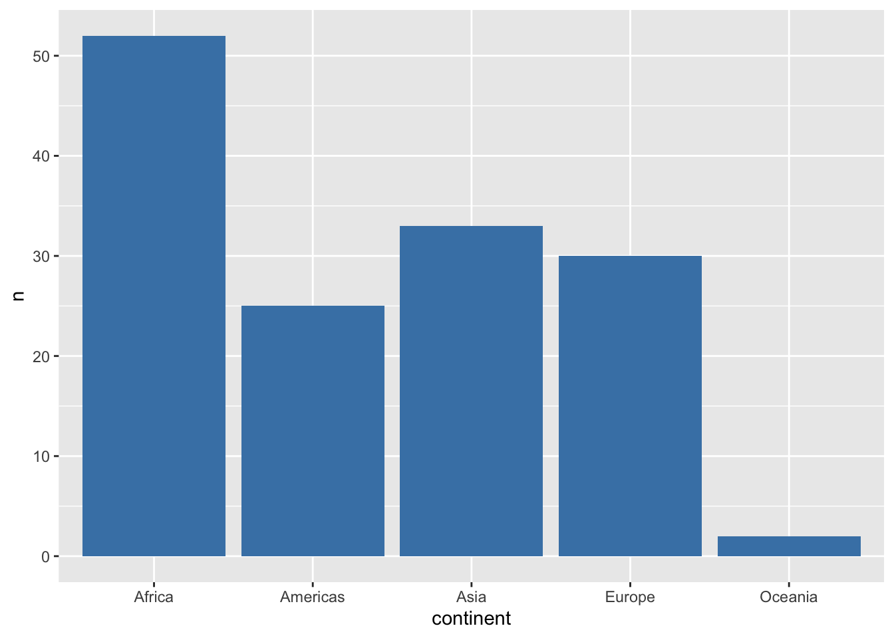
Adding more aesthetic encodings (mapping variables to aesthetics)
In the graph below, the aesthetic “x” (the x position) encodes the information about gdpPercap. The aesthetic “y” (the y position) encodes the information about gdpPercap
Modify the plot below so that the aesthetic “size” encodes information about the variable “pop” and the aesthetic “color” encodes information about the variable “continent”.
ggplot(data = gapminder_2007) +
aes(x = gdpPercap,
y = lifeExp,
color = continent) +
geom_point(size = 3)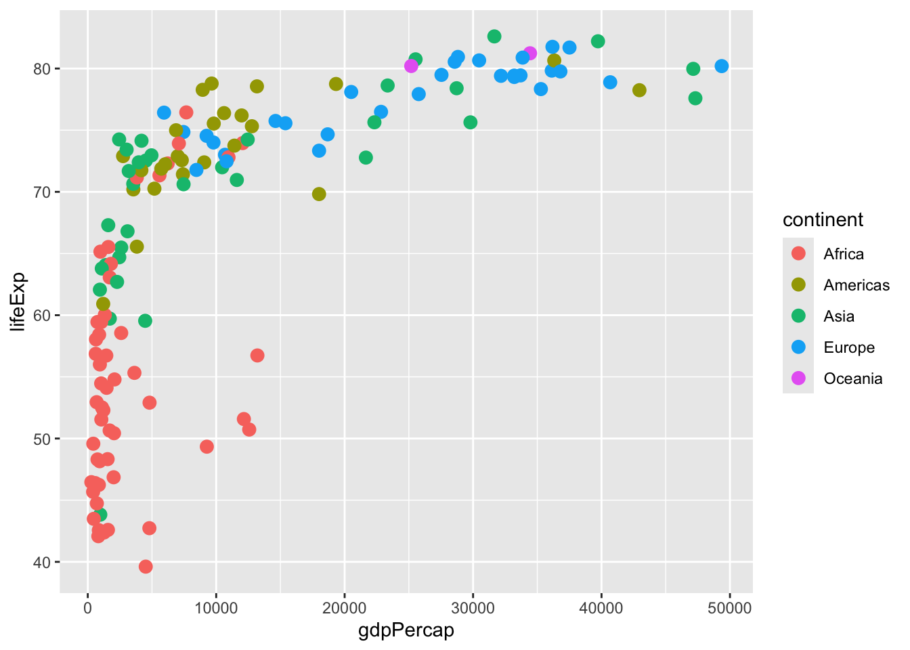
Faceting (“small multiples” which plots subsets of data)
Now add to the code above, and “facet” that uses “faceting”. Facet by continent (“~” is the “by” symbol) continent; this will creates individual plots for each continent. (You will use a “facet_wrap()” statement. See the ggplot cheatsheet to see if you can figure out the exact syntax.)
# new code hereNow that you have faceted by continent, what aesthetic mapping can you remove without losing any information? Write a sentence answer:
My answer …
Changing data source
Using the code in the code chunk above as a basis, plot with the 1967 dataframe instead of 2007 dataframe.
## New code herePlotting across two time periods.
Now we’ll use the dataframe gapminder_1967_2007. Using the code in the codechunk below as a basis, have “color” encode information about the year.
ggplot(gapminder_1967_2007) +
aes(x = gdpPercap, y = lifeExp, shape = continent) +
geom_point()
Answer the question, is ggplot interpreting “year” as a continuous variable or a discrete variable?
Two-way facet
Now, use facet_grid() to create “small multiples”, plotting subsets of data, where categories are defined by “year” and “continent”. Reference the ggplot cheetsheet for exact syntax.
ggplot(gapminder_1967_2007) +
aes(x = gdpPercap, y = lifeExp, shape = continent) +
geom_point()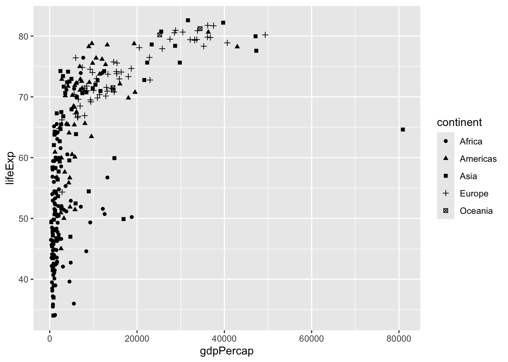
Trends
Now we subset the data to look at some trends. Execute the code.
gapminder_peru_chile <- gapminder |> filter(country %in% c("Chile", "Peru"))
gapminder_europe <- gapminder |> filter(continent == "Europe")Below, use an additional “geom” to connect the points:
ggplot(gapminder_peru_chile) +
aes(x = year, y = gdpPercap, col = country) +
geom_point()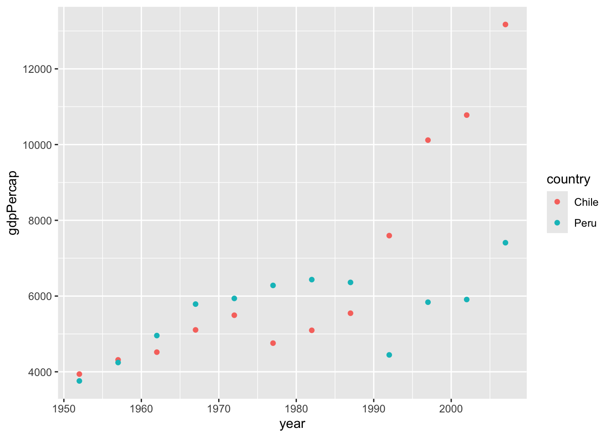
What is the reason we need to use the aesthetic group below? (Hint: create the plot without the group statement) Write your answer:
My answer …
ggplot(gapminder_europe) +
aes(x = year, y = gdpPercap, group = country) +
geom_line()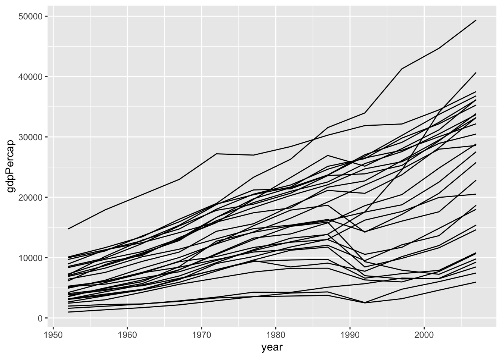
We can use color as in the plot below, which also implies groups in the data. Between the plot above and the one below, which plot do you prefer? Why? Answer in a sentence:
I think that …
ggplot(gapminder_europe) +
aes(x = year, y = gdpPercap, col = country) +
geom_line()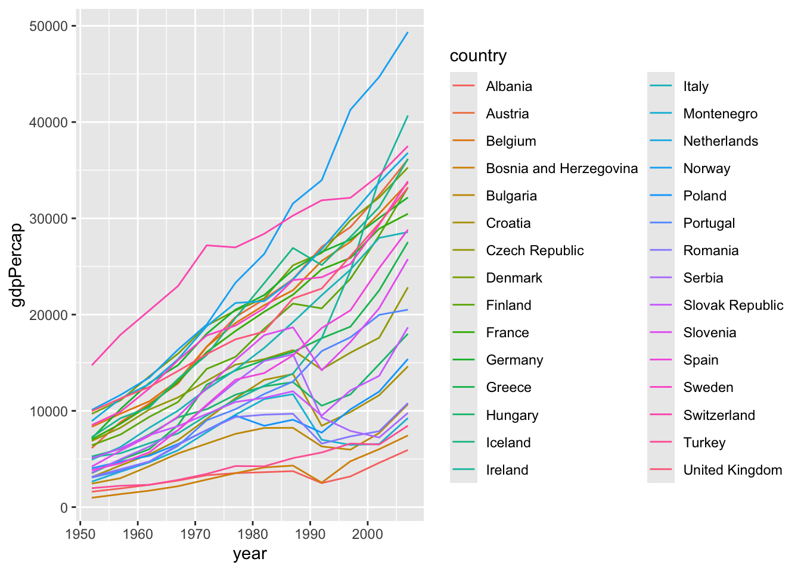
Adjusting scales
The default scales for the x position is “continuous”. Below the scale is “sqrt”, which isn’t very typical. Change it to “log10”.
Also, the default color scale is blues – I’ve explicitly included the scales code. Change it to scale_color_viridis_c(option = “magma”).
ggplot(data = gapminder_2007) +
aes(x = gdpPercap,
y = lifeExp,
col = pop) +
geom_point(size = 3) +
scale_x_sqrt() +
scale_color_continuous()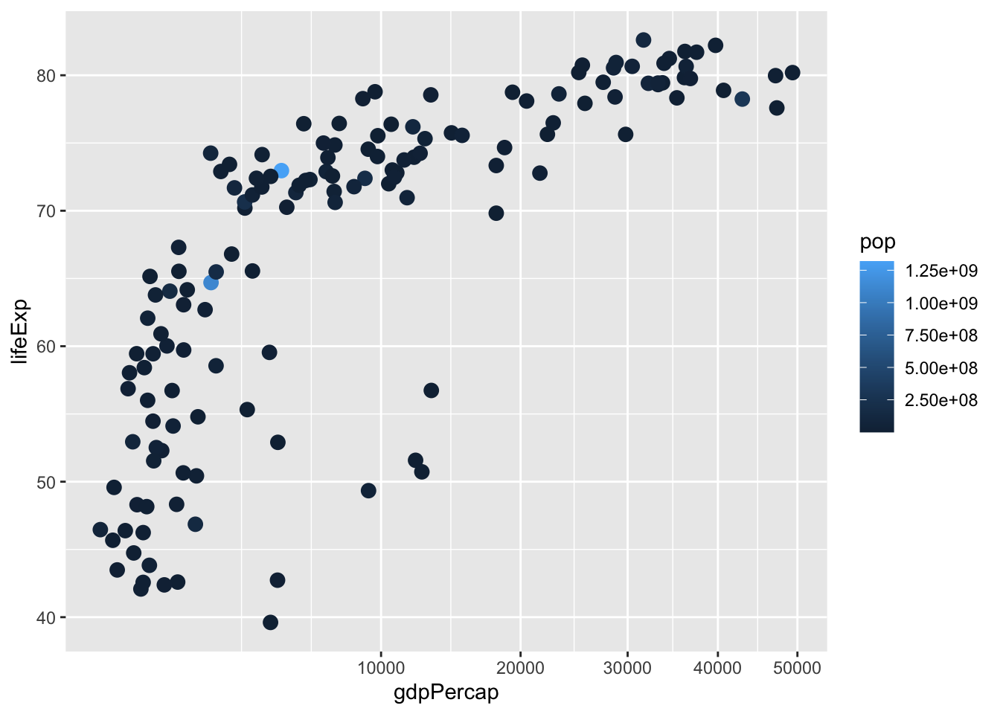
Labeling
Good labeling keeps your audience from guesswork.
Aesthetic labels will automatically be variable names, but these can be overwritten using the “labs” function. The arguments in the labs() statement parallel the arguments in the aes() statement.
Make the labels informative below. Note: sometimes people drop the label when the x axis is year, because the tick mark labels make it pretty obvious what the axis is. So you might thing about x = “” an empty character string in such cases.
ggplot(gapminder_2007) +
aes(x = gdpPercap/1000,
y = lifeExp,
col = continent,
size = pop/1000000) +
geom_point() +
labs(x = "GDP per cap ($US thousands)",
y = "my y label",
col = "my col label",
size = "population (millions)") 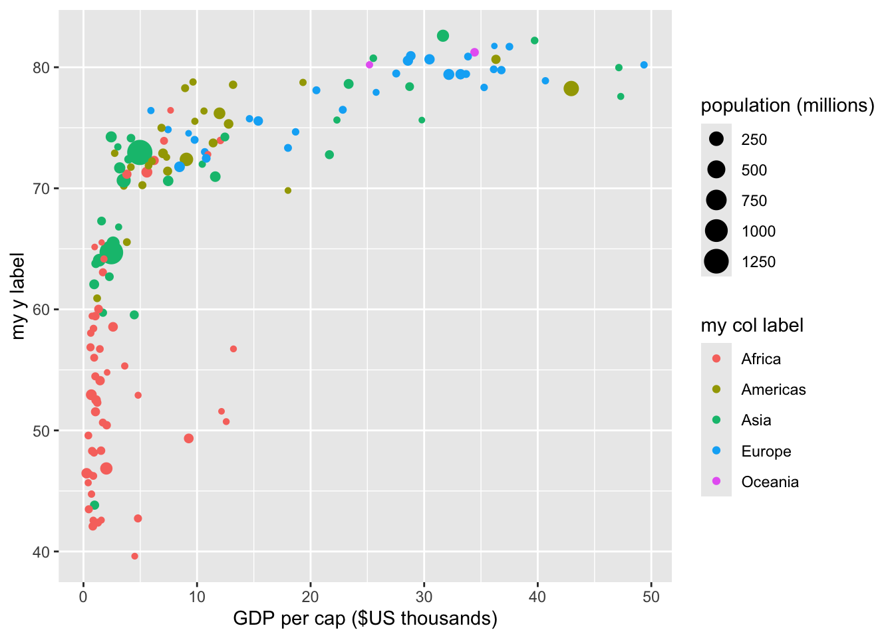
You can also use the labs() statement to provide some “meta” information about the plot. Adjust the title, subtitle, caption to your liking. (add your name to the caption)
options(scipen = 10) # sets when scientific notation turns on. We want a lot of zeros before it does.
ggplot(gapminder_2007) +
aes(x = gdpPercap, y = lifeExp, col = continent, size = pop/1000000) +
geom_point() +
labs(title = "GDP per Cap v. Life Expectancy for Countries 2007",
subtitle = "Data source: gapminder package from R",
caption = "Created by ___ in 2019")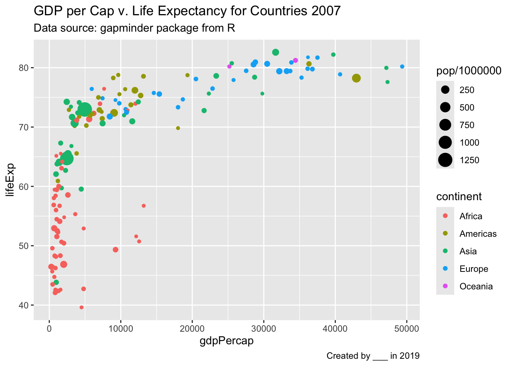
Annotation
Annotation can provide useful context to your audience and to you. Below you see the “label” geom. Try geom_text() instead of geom_label.
Which is the country with the highest earning per capita in 1967:
It is …
ggplot(data = gapminder_1967) +
aes(x = gdpPercap, y = lifeExp, label = country) +
geom_point() +
geom_label(nudge_y = 2) +
scale_x_log10()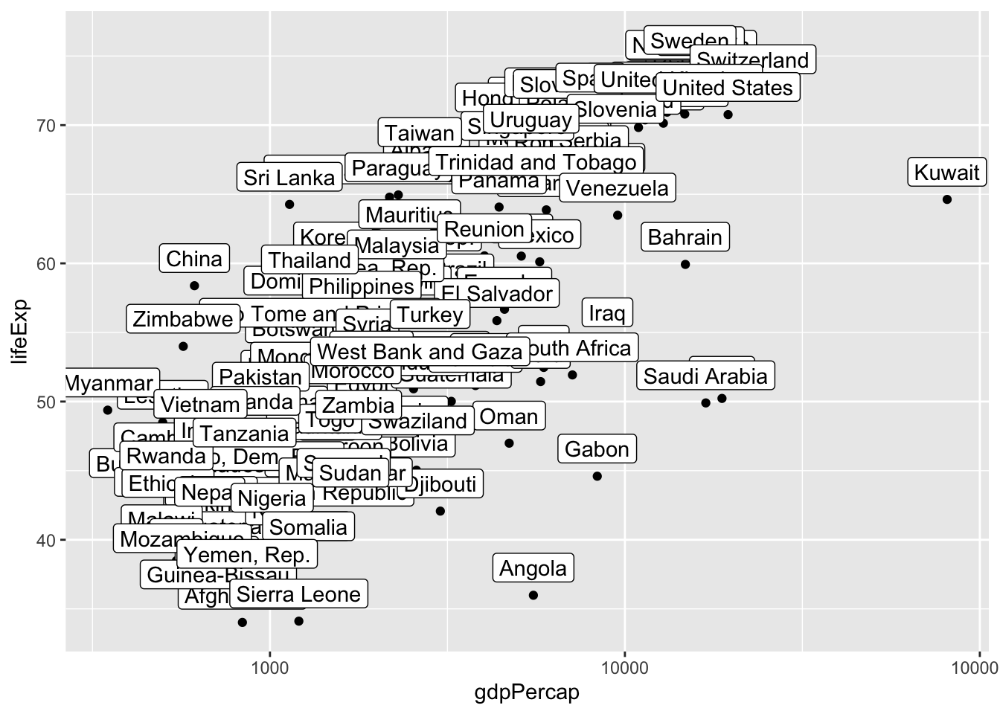
You might want to label certain key points. Then you can define a subset of the data for the geom_label argument to use (so different than that initially declared). Change the labelled country to another country.
ggplot(data = gapminder_1967) +
aes(x = gdpPercap, y = lifeExp, label = country) +
geom_point() +
geom_label(data = gapminder_1967 |> filter(country == "Austria"),
nudge_y = 2) +
scale_x_log10()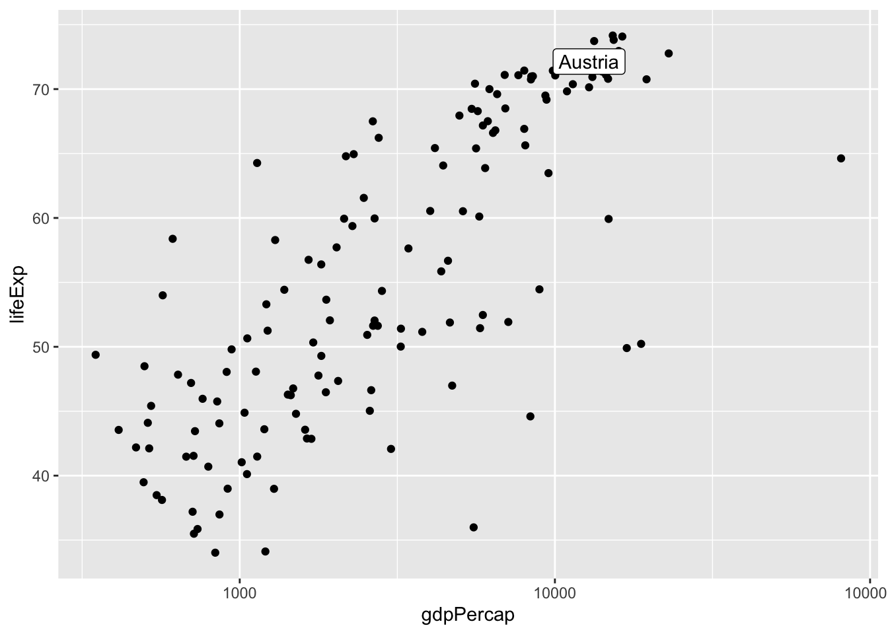
To label only a handful of outlying points, you can use the packages ggrepel and ggpmisc as shown below.
The annotation statements allow you to mark the plots, without refering to a data frame. Adjust the position of the message “there seems to be…”. Then delete the blue point — i.e. the annotation layer that creates the blue point.
options(scipen = 10)
library(ggrepel)
ggplot(data = gapminder_1967) +
aes(x = gdpPercap, y = lifeExp, label = country) +
scale_x_log10() +
geom_point() +
ggrepel::geom_label_repel(keep.fraction = .10,
size = 3.8) +
annotate(geom = "text",
x = I(.8),
y = I(.15),
label = "There seems to be \na relationship between\ngdp percap and life Exp") +
annotate(geom = "point",
x = 10000, y = 80,
col = "blue",
size = 3)Warning in ggrepel::geom_label_repel(keep.fraction = 0.1, size = 3.8): Ignoring
unknown parameters: `keep.fraction`Warning: ggrepel: 123 unlabeled data points (too many overlaps). Consider
increasing max.overlaps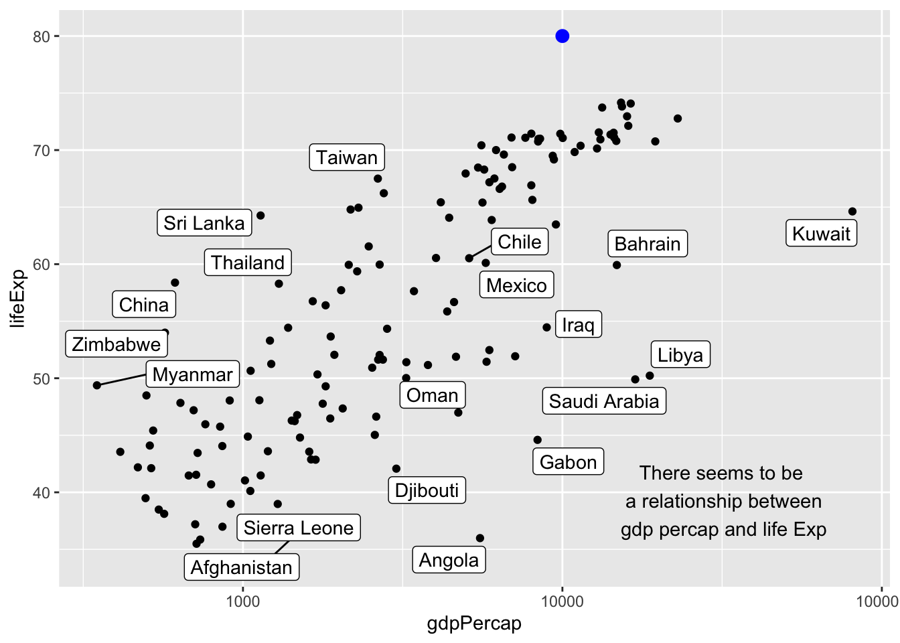
Plotting multiple data frames
You can plot from multiple dataframes on the same plot space.
You might have a main dataframe and an alternate dataframe. Change the means of life expectancy to another color and size.
What happens if you delete the aesthetic mapping argument: aes(y = life_exp_mean). Why does this happen? (then put the arguement back).
Your answer here….
What does the argument alpha seem to do?
answer here.
# creating summary data frame
gapminder_year_means <- gapminder |>
group_by(year) |>
summarise(life_exp_mean = mean(lifeExp))
gapminder_year_means # New data set, we'll plot on the same graph# A tibble: 12 × 2
year life_exp_mean
<int> <dbl>
1 1952 49.1
2 1957 51.5
3 1962 53.6
4 1967 55.7
5 1972 57.6
6 1977 59.6
7 1982 61.5
8 1987 63.2
9 1992 64.2
10 1997 65.0
11 2002 65.7
12 2007 67.0ggplot(data = gapminder) + # main data frame is declared
aes(x = year, y = lifeExp) + # main aesthetic mappings are declared
geom_point(alpha = .2) + # Because there are no
geom_point(
data = gapminder_year_means, # specifying alternate data frame for this geom layer
col = "blue", size = 3,
aes(y = life_exp_mean) # overwriting aesthetic mappings for this layer
) 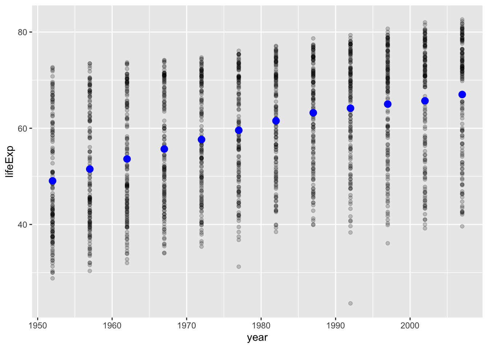
Bonus
Think about how you would implement the tip of Harvard Political Science professor Matthew Blackwell using ggplot2?
“My best tip on how to give better quantitative presentations is to (a) use more plots and (b) build up your plots on multiple overlays, as in:
- Just x-axis (explain it)
- Add y-axis (explain it)
- Add 1 data point (explain it)
- Plot the rest of the data (explain it)” April 30, 2018
https://twitter.com/matt_blackwell/status/991004129198854145?ref_src=twsrc%5Etfw